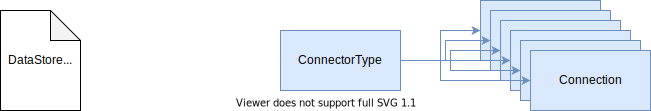
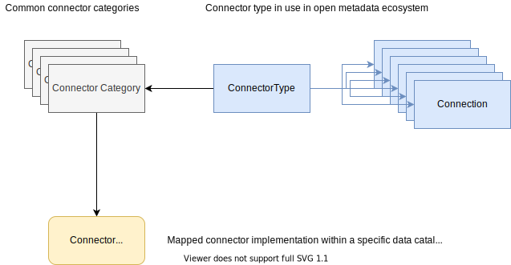

Developer Guide¶
This guide supports developers wishing to customize Egeria to run in additional environments, exchange metadata with additional third party technologies and/or augment existing tools and utilities.
The diagram below illustrates the choices you have in developing with Egeria:

Egeria offers Java clients for utilities and applications to call the Egeria APIs and receive event notifications. It is also possible to directly call the REST APIs and access the events through the event bus APIs. Finally connectors can be plugged into the Egeria OMAG Server Platform to customize its capabilities. Connectors may also be used to access the content of digital resources along with its metadata from the open metadata and governance ecosystem
The numbers on the diagram refer to these notes:
-
Egeria's Java clients wrap calls to Egeria's REST APIs. The aim is to provide a language-specific interface that manages parameter validation along with the marshalling and de-marshalling of the call parameters and responses to these services.
-
Many of Egeria's Java clients provide the mechanism to register a listener with a topic that an Egeria service is publishing notifications to. This removes all requirements for the consuming Java application to interact with the event bus technology.
-
Some of Egeria's Java clients also support the creation of digital resource connectors that can access the content of digital resources along with the metadata about the digital resource.
-
For applications that are not written in Java, it is possible to call Egeria directly through its REST APIs, and access Egeria's notifications by connecting directly to the topics on the event bus.
-
Egeria's OMAG Server Platform can host many types of connectors. For example, there are connectors that automatically catalog metadata from a third party technology.
-
Connectors hosted in the OMAG Server platform may use open metadata to configure a third party digital service.
-
Connectors are also used to connect metadata stores and catalogs into the open metadata ecosystem.
-
Governance services are specialist connectors hosted in the OMAG Server Platform to automate the maintenance of both metadata and digital resources.
-
Finally, Egeria uses connectors in the OMAG Server Platform to access the services it needs to operate. Many of these runtime connectors are based around files. They can be replaced to enable Egeria to run in new types of containers or operating platforms.
REST APIs are intended for internal use
The REST APIs are usable directly for calling from non-Java platforms; however, they are designed for the internal use of Egeria and are not guaranteed to be backwards compatible.
The structure of the URL for an Egeria REST API varies lightly depending on whether it is a call to an OMAG Server Platform service or an OMAG Server service.
Getting Started¶
The developer guide is organized as follows:
-
Working with the platform APIs - Using Egeria APIs to configure and operate Egeria's OMAG Server Platform.
-
Using connectors - initializing and calling a digital resource connector from external services and other connectors.
-
Building connectors - How to write new connectors to integrate different technologies together.
-
Building open metadata archives - Working with Open Metadata Archives to add new open metadata types or standard metadata definitions that can be shared and loaded into multiple metadata repositories.
-
Working with the open metadata and governance APIs - Using Egeria's open metadata and governance APIs to create new services or to augment existing services.
-
Adding your own registered services - Extending Egeria by adding new registered services.
-
Build considerations - Best practises for building extensions to Egeria.
Working with the platform APIs¶
The platform APIs fall into three categories:
- Configuring the OMAG Server Platform and OMAG Servers.
- Starting and stopping OMAG Servers
- Querying the status of the platform and its servers.
The Java clients for a specific platform API are located in its -client module.
Each Java client has multiple constructors. The constructors set up the connection to the OMAG Server Platform. The parameters are passed in different combinations to control security and logging.
platformName- the descriptive name of the OMAG Server Platform for error logging.platformURLRoot- the platform url root of the OMAG Server Platform.auditLog- logging destination for audit log messages.userId- this is the optional userId that is embedded in all REST calls. Think of it as the client's user Id rather than the userId of the end user.password- this is the password that goes with the client's userId. The userId and password should both be supplied or neither.maxPageSize- controls the maximum number of results that can be returned on any call. If this is not set, the max page size is controlled platform-side.restClient- inside the java client is a REST API connector that manages the marshalling and de-marshalling of the requests into the HTTP protocol used by REST. Normally this connector is created by the client, but this parameter enables an externally created connector to be used instead.
The constructor may throw InvalidParameterException if there is an issue setting up the client-side components based on the supplied parameters. Pick the constructor that matches the parameters you have. For example, if you call the constructor that supports the client's userId and password and you pass null in these parameters, the exception is thrown.
Below is an example of using the Administration Services to construct its MetadataAccessStoreConfigurationClient client. As the name suggests, this client is used to configure a new metadata access store server.
Example: Creating the configuration client for a Metadata Access Store
1 | |
Once the client is created, use it to call the API it offers which is documented using Javadoc.
For example, the code below sets up the descriptive properties of the server.
Example: Calling the configuration client for a Metadata Access Store
1 2 3 4 5 | |
Further information
- Administration Services for both configuring the OMAG Server Platform and OMAG Servers as well as starting and stopping them.
- Platform Services for querying the status of the platform.
- Egeria's Javadoc.
Working with the open metadata and governance APIs¶
The open metadata and governance APIs are provided by the Open Metadata Access Services (OMASs) and the Open Metadata View Services (OMVSs). The OMASs run in the metadata access server and provide specialized services for querying and maintaining metadata in the local metadata repository (if any) and any metadata repository connected via cohorts. The clients of the OMASs are written in Java and are designed to be used by applications running behind the fire-wall with the metadata repositories. The OMVSs run in the view server and are designed to be consumed by user interface code typically written in JavaScript. These interfaces are called directly as REST API calls.
Using the OMAS clients¶
The Java clients for an OMAS are located in its -client module.
Each Java client has multiple constructors. The constructors set up the connection to the metadata access server. The parameters are passed in different combinations to control security and logging.
serverName- the name of the metadata access server.serverPlatformURLRoot- the platform url root of the OMAG Server Platform where the metadata access server is running.auditLog- logging destination for audit log messages.userId- this is the optional userId that is embedded in all REST calls. Think of it as the client's user Id rather than the userId of the end user.password- this is the password that goes with the client's userId. The userId and password should both be supplied or neither.maxPageSize- controls the maximum number of results that can be returned on any call. If this is not set, the max page size is controlled server-side.restClient- inside the java client is a REST API connector that manages the marshalling and de-marshalling of the requests into the HTTP protocol used by REST. Normally this connector is created by the client, but this parameter enables an externally created connector to be used instead.callerId- found on clients that support registering a listener for out topic events. It is used to maintain a pointer to the next event to receive that is specific to the caller Id. It should be unique for each independent receiver. Alternatively, if you have a number of clients that are sharing the processing load for the out topic, all of there callerIds should be the same, and the events will be distributed amongst them.
The constructor may throw InvalidParameterException if there is an issue setting up the client-side components based on the supplied parameters. Pick the constructor that matches the parameters you have. For example, if you call the constructor that supports the client's userId and password and you pass null in these parameters, the exception is thrown.
Below is an example of using the Asset Consumer OMAS to construct its AssetConsumer client.
AssetConsumer client = new AssetConsumer(serverName, platformURLRoot);
client.addLikeToAsset(clientUserId, assetGUID, true);
AssetUniverse assetUniverse = client.getAssetProperties(clientUserId, assetGUID);
Maintaining metadata¶
Each OMAS has its own specialized API and its own style, but typically there are methods for creating, updating and deleting elements along with methods for linking them together and unlinking them - also maintaining classifications. If the OMAS is maintaining assets, you may see methods for publishing and withdrawing assets. The publish method updates the asset's zones to the OMAS's PublishedZones and the withdraw() method updates the asset's zones to the OMAS's DefaultZones. Typically, the asset is only visible to most users when the published zones are in use. The default zones are used while the asset is being set up.
Retrieving metadata¶
The findXXX methods typically take a regular expression and look for the value in all properties. The getXXXByName style method does not use wild cards and retrieves the element if there is an exact match in the qualifiedName or displayName. Finally, it is typical to have methods to retrieve a single element via its unique identifier (guid).
Finding and retrieving metadata
See Finding and retrieving metadata for more information on retrieving metadata.
Registering a listener¶
Some OMASs offer an event interface for receiving events from the out topic. To use it, your java class needs to extend the event listener interface and implement the abstract processEvent method. Below is a simple example from Asset Consumer OMAS. The event type is used to determine which java class to use to cast the event so its payload can be accessed.
public class AssetLookUp extends AssetConsumerEventListener
{
/**
* Process an event that was published by the Asset Consumer OMAS.
*
* @param event event object - call getEventType to find out what type of event.
*/
public void processEvent(AssetConsumerEvent event)
{
if (event.getEventType() == AssetConsumerEventType.NEW_ASSET_EVENT)
{
NewAssetEvent assetEvent = (NewAssetEvent)event;
System.out.println("EVENT: " + assetEvent.getEventType().getEventTypeName() + " - for asset " + assetEvent.getAsset().getGUID());
}
else if (event.getEventType() == AssetConsumerEventType.UPDATED_ASSET_EVENT)
{
UpdatedAssetEvent assetEvent = (UpdatedAssetEvent)event;
System.out.println("EVENT: " + assetEvent.getEventType().getEventTypeName() + " - for asset " + assetEvent.getAsset().getGUID() + " - at " + assetEvent.getUpdateTime());
}
}
}
If your client is running outside the OMAG Server Platform, you will need to add a dependency to your client for the Open Metadata Topic Connector that is in use in the OMAG Server. For example, if you see this error:
There was a org.odpi.openmetadata.frameworks.connectors.ffdc.ConnectionCheckedException exception when calling the OMAG Server Platform. Error message is: OCF-CONNECTION-400-005 Unknown Connector Provider class org.odpi.openmetadata.adapters.eventbus.topic.kafka.KafkaOpenMetadataTopicProvider passed in connection <Unknown>
Process finished with exit code 0
<dependency>
<groupId>org.odpi.egeria</groupId>
<artifactId>kafka-open-metadata-topic-connector</artifactId>
<scope>compile</scope>
<version>${open-metadata.version}</version>
</dependency>
Further information
What is a connector?¶
Connectors are plug-in Java clients that either perform an additional service, or, more typically, enable Egeria to integrate with a third party technology.
The concept of a connector comes from the Open Connector Framework (OCF). The OCF provides a common framework for components that enable one technology to call another, arbitrary technology through a common interface. The implementation of the connector is dynamically loaded based on the connector's configuration.
Configuration¶
The configuration for a connector is managed in a connection object.
A connection contains properties about the specific use of the connector, such as user Id and password, or parameters that control the scope or resources that should be made available to the connector. It links to an optional endpoint and a mandatory connector type object.
ConnectorTypedescribes the type of the connector, its supported configuration properties and its factory object (called the connector's provider). This information is used to create an instance of the connector at runtime.Endpointdescribes the server endpoint where the third party data source or service is accessed from.
Connector types and endpoints can be reused in multiple connections.

Factories¶
Each connector implementation has a factory object called a connector provider. The connector provider has two types of methods:
- Return a new instance of the connector based on the properties in a supplied
Connectionobject. TheConnectionobject has all the properties needed to create and configure the instance of the connector. - Return additional information about the connector's behavior and usage to make it easier to consume. For example, the standard base class for a connector provider has a method to return the
ConnectorTypeobject for this connector implementation that can be added to aConnectionobject used to hold the properties needed to create an instance of the connector.
Lifecycle of the connector¶
Each connector has its own unique implementation that is structured around a simple lifecycle that is defined by the OCF. The OCF provides the interface for a connector called Connector that has three methods: initialize, start and disconnect.
This connector interface supports the basic lifecycle of a connector. There are three phases:
-
Initialization - During this phase, the connector is passed the context in which it is to operate. It should store this information.
This phase is initiated by a call to the connector's
initialize()method, which is called after the connector's constructor and provides the connector with a unique instance identifier (for logging) and its configuration stored in a connection. Afterinitialize()returns, there may be other calls to pass context to the connector. For example, if the connector implements theAuditLoggingComponent, an audit log is passed to the connector. -
Running - The connector is completely initialized with its context, and it can start processing.
This phase is initiated by a call to the connector's
start()method. At this point it should create its client to any third party technology and begin processing. It may also start up threads if it needs to perform any background processing (such as listening for notifications). If the connector throws an exception during start, Egeria knows the connector has a configuration or operational issue and will report the error and move it to disconnected state. -
Disconnected - The connector must stop processing and release all of its resources.
This phase is initiated by a call to the connector's
disconnect()method.
Depending on the type of connector you are writing, there may be additional initialization calls occurring between the initialize() and the start() method. The connector may also support additional methods for its normal operation that can be called between the start() and disconnect() calls.
The OCF also provides the base class for a connector called ConnectorBase . The ConnectorBase base class manages the lifecycle state of the connector. For example, the default implementation of initialize() in the ConnectorBase class stores the supplied unique instance identifier and connection values in protected variables called connectorInstanceId and connectionProperties respectively.
Call the base class's methods in any overrides
If you override any of the initialize(), start() or disconnect() methods, be sure to call super.xxx() at the start of your implementation to call the appropriate super class method so that the state is properly maintained.
Using connectors¶
Connectors can be created through the following clients:
The code sample below uses the Asset Consumer OMAS client to retrieve a list of assets from a metadata access server and then create a connector to each one using the getConnectorToAsset() method.
This method assumes that there is a connection object with a connector type and endpoint linked to the requested asset in the metadata repository.
An exception is thrown if an asset does not have a connection.
In the sample, the connector returned by the Asset Consumer OMAS client is then cast to the CSVFileConnector. Assets that are not CSV files will have a different connector implementation and so the casting to CSVFileConnector also results in an exception.
Assets that do not have a CSVFileConnector are ignored. The result is that the sample method returns a connector for the first CSV file asset retrieved from the metadata repository.
Example: connecting to CSV files using Asset Consumer OMAS
1 2 3 4 5 6 7 8 9 10 11 12 13 14 15 16 17 18 19 20 21 22 23 24 25 26 27 28 29 30 31 32 33 34 35 36 37 38 39 40 41 42 43 44 45 46 47 48 49 50 51 52 53 54 55 56 57 58 59 60 61 62 63 | |
Connecting to assets with different levels of security¶
It is possible that an asset can have multiple connections, each with different levels of security access encoded. Egeria is able to determine which one to use by calling the validateUserForAssetConnectionList() method of the Server Security Metadata Connector.
Other links to the connection¶
Open metadata is a connected network (graph) of information. The connector type and endpoint that a connection object links to are typically shared with many connections. This creates some interesting insight.
For example, there is typically one connector type for each connector implementation. By retrieving the relationships from the connector type to the connections, it is possible to see the extent to which the connector is used.
Connector types¶

The connector types for Egeria's data store connectors are available in an open metadata archive called DataStoreConnectorTypes.json that can be loaded into the server. This approach can be used for all of your connector implementations to create the connector type objects in our metadata repository. See the open-connector-archives for more detail.
Connector categories¶
By default, connector implementations are assume to support the OCF. However, many vendor platforms have their own connector frameworks. The ConnectorCategory allows equivalent connector types from different connector frameworks to be gathered together so that the connector type from a connection can be swapped for an equivalent connector type for the locally supported connector framework.

Endpoints¶
The endpoints are typically linked to the software server that is called by the connector. By navigating from the Endpoint to the linked connections it is possible to trace the callers to the software server.

Software servers and endpoints are set up through the IT Infrastructure OMAS.
Further information
The connector catalog lists the connectors provided by the Egeria community.
Extending Egeria using connectors¶
Egeria has extended the basic concept of the OCF connector and created specialized connectors for different purposes. The following types of connectors are supported by the Egeria subsystems with links to the documentation and implementation examples.
| Type of Connector | Description | Documentation | Implementation Examples |
|---|---|---|---|
| Integration Connector | Implements metadata exchange with third party tools. | Building Integration Connectors | integration-connectors |
| Open Discovery Service | Implements automated metadata discovery. | Building Open Discovery Services | discovery-service-connectors |
| Governance Action Service | Implements automated governance. | Building Governance Action Services | governance-action-connectors |
| Configuration Document Store | Persists the configuration document for an OMAG Server. | Configuration Document Store Connectors | configuration-store-connectors |
| Platform Security Connector | Manages service authorization for the OMAG Server Platform. | Metadata Security Connectors | open-metadata-security-samples |
| Server Security Connector | Manages service and metadata instance authorization for an OMAG Server. | Metadata Security Connectors | open-metadata-security-samples |
| Secrets Store Connector | Retrieves secrets (passwords, certificates, ...) from a secure store at runtime. | Secrets Store Connectors | open-metadata-security-samples |
| Metadata Collection (repository) Store | Interfaces with a metadata repository API for retrieving and storing metadata. | OMRS Repository Connectors | open-metadata-collection-store-connectors |
| Metadata Collection (repository) Event Mapper | Maps events from a third party metadata repository to open metadata events. | OMRS Event Mappers | none |
| Open Metadata Archive Store | Reads an open metadata archive from a particular type of store. | OMRS Open Metadata Archive Store Connector | open-metadata-archive-connectors |
| Audit Log Store | Audit logging destination | OMRS Audit Log Store Connector | audit-log-connectors |
| Cohort Registry Store | Local store of membership of an open metadata repository cohort. | OMRS Cohort Registry Store | cohort-registry-store-connectors |
| Open Metadata Topic Connector | Connects to a topic on an external event bus such as Apache Kafka. | Open Metadata Topic Connectors | open-metadata-topic-connectors |
| Digital Resource Connector | Provides access to a third party technology. | Building digital resource connectors | file-connectors |
You can write your own connectors to integrate additional types of technology or extend the capabilities of Egeria - and if you think your connector is more generally useful, you could consider contributing it to the Egeria project.
Building open metadata archives¶
An open metadata archive is a portable collection of open metadata type definitions and instances. It can be loaded each time a metadata access server starts up or added to a running metadata access server.
The open metadata archive has three types that are used to signal how the archive is intended to be used:
- A content pack contains standard metadata that is generally useful. It may come from the Egeria community or third parties. It can be loaded into many repositories, whether these repositories are connected or not via cohorts. This is a useful way to distribute open metadata types or definitions for a standard.
- A metadata export contains a collection of metadata elements that have been extracted from a specific open metadata repository to load into another. It is used to transfer metadata between repositories that are not connected via cohorts.
- A repository backup contains a collection of metadata elements that is intended to act as a backup for a server. It typically contains metadata instances from the server's local metadata collection. This archive is expected to be loaded back into the same repository. This can be done at any time. If the repository contains more recent content, the older content in the archive is ignored.
Raise an issue or comment below
The structure of an open metadata archive writer that builds an open metadata archive as a json file, uses
- One or more archive helper classes to construct the elements for the archive.
- An archive builder class that holds the archive content in memory as it is assembled.
Your archive writer class then extracts the content from the builder to write out the archive file.

Egeria provides the following utility modules in egeria.git to help you create an archive writer.
- Module
repository-services-archive-utilities- located inopen-metadata-implementation/repository-services- provides the functions for archive building using Open Metadata Repository Service (OMRS) type definitions and instances. These are the objects that are stored in the archive and all of this modules classes beginOMRS. - Module
content-pack-helpers- located inopen-metadata-reources/open-metadata-archives- has archive helper classes for building instances of well known types such as assets, connections and schema.
Using these utilities, your archive writer inherits from OMRSArchiveWriter which does all the work of formatting the archive and writing it to disk.
Your archive writer creates an instance of OMRSArchiveBuilder to accumulate the content of the archive.
-
When it is building types, it uses the
OMRSArchiveHelperto create each type definition and then adds it to the archive builder. -
When it is creating instances, your archive writer typically uses the appropriate helper classes in
content-pack-helpers. However, this only for ease of coding because they manage the mapping from, say an asset to an entity instance of typeAsset.
The content-pack-helpers all use OMRSArchiveHelper in their implementation to create the actually archive object. To illustrate, here is the code inside SimpleCatalogArchiveHelper for creating an entity instance of type Asset. The archiveHelper it is using is of type OMRSArchiveHelper. It is passed your archive writer's archiveBuilder in its constructor and so you also see the call to add the entity to the archive builder at the end of the method.
1 2 3 4 5 6 7 8 9 10 11 12 13 14 15 16 17 18 19 20 21 22 23 24 25 26 27 28 29 30 31 32 33 34 35 36 37 38 39 40 41 42 43 44 45 46 | |
Once all the type definitions and instances have been created, your archive writer extracts the content of the archive from the archive builder. It is returned as an OpenMetadataArchive object which it passes to its super class (OMRSArchiveWriter) along with the file name of and the new open metadata archive is written to disk.
1 2 3 4 5 6 7 8 9 10 11 12 13 14 15 16 17 18 19 20 21 22 23 24 25 26 27 28 29 30 31 32 33 34 35 36 37 38 39 | |
Open metadata archive examples
Adding registered services¶
Registered services are optional services that plug into Egeria's OMAG Server Platform. There are 4 types:
-
Open Metadata Access Services (OMAS) provide specialized APIs and events for retrieving and maintaining open metadata. These services run in a Metadata Access Server.
-
Open Metadata Engine Services (OMES) provide specialist APIs that support specific types of governance engines. These services run in an Engine Host and call an OMAS to retrieve and maintain open metadata.
-
Open Metadata Integration Services (OMIS) provide specialist connector APIs for exchanging open metadata with third party technologies. These services run in an Integration Daemon and call an OMAS to retrieve and maintain open metadata.
-
Open Metadata View Services (OMVS) provide specialist REST APIs for browser-based user interfaces (UIs). These services run in a View Server and call an OMAS to retrieve and maintain open metadata.
There are many choices of registered services within the Egeria project. However, you may add your own. The recommended modules for registered services (required if it is to be contributed to the Egeria project) are shown in the table below:
| Module naming | Description | OMAS | OMES | OMIS | OMVS |
|---|---|---|---|---|---|
| moduleName-api | Client java interface(s), property beans and rest beans. | CP | CP | CP | P |
| moduleName-client | Java client implementation. | CP | C | C | N |
| moduleName-topic-connectors | Java connectors for sending and receiving events. | OCP | N | N | N |
| moduleName-server | Server-side REST and event management implementation. | P | P | P | P |
| moduleName-spring | Server-side REST API. | P | P | P | P |
Key:
- CP - Required and runs in external clients plus in the OMAG Server Platform.
- C - Required and runs in external clients.
- P - Required and runs in the OMAG Server Platform.
- OCP - Optional and when provided runs in external clients plus in the OMAG Server Platform.
- N - Not implemented/needed.
The modules for each registered service that need to run in the OMAG Server Platform are delivered in their own jar that is available to the OMAG Server Platform via the CLASSPATH. Inside the registered service's spring jar are one or more REST APIs implemented using Spring Annotations. On start up, the OMAG Server Platform issues a Component Scan to gather details of its REST APIs. This process loads the spring module which in turn loads the server and api modules of registered services it finds, and they are initialized as part of the platform's capabilities and are callable via the platform's root URL and port. The client module of an OMAS is loaded by an OMES, OMIS or OMVS registered service that is dependent on the OMAS to get access to open metadata.
The best guide for building registered services are the existing implementations found in egeria.git. You can see the way the code is organized and the services that they depend on.
Build principles¶
Which build tool?¶
Egeria's approach is to use Gradle to build Egeria extensions, and Egeria itself.
We are migrating our own repositories over to Gradle as we see the following benefits:
- Much quicker builds due to caching, incremental compile,change detection, parallelism
- better flexibility in defining build tasks
- A more vibrant community with current discussions
- Our examples will focus on Gradle, but you may also use Maven.
Use stable versions from official repositories¶
Egeria core libraries, and other java-oriented artifacts created by the Egeria team are published to Maven Central (technically this is in fact just an index)
- Code releases (for example '3.14') go to the Releases repository, and will typically be picked up by default by Java build tools
- Snaphots, which are typically produced by Egeria projects as part of code merge, go to the Snapshots repository. This typically needs configuration in a build file
Additionally, when compilation is done locally, a local repository may be populated with artifacts. It is not recommended to use a local build for dependencies in code you develop unless working on core Egeria libraries.
It is recommended to:
- Depend on releases if possible (ie unless requiring a new feature/fix in code being developed). This is essential if your extension is to be stable and read to use
- Use snapshots if requiring unreleased artifacts, but be aware that the contents can change, or go away
- Only use a local repository if actively making simultaneous changes to multiple repos, for example if developing a new OMAS alongside an integration connector. It's inadvisable to check in code with any dependency on local repositories or jars as behaviour will differ depending on the local environment.
Example build.gradle fragments¶
repositories {
// If only using mavenCentral you likely will not need a repository section at all
mavenCentral()
// Uncomment to use snapshots ie egeria 3.15-SNAPSHOT
//maven { url("https://oss.sonatype.org/content/repositories/snapshots") }
// Uncomment to pick up from local ~/.m2 - but can be unpredictable. recommend to use maven central and snapshots
// mavenLocal()
}
If using repositories that may change contents without version - such as snapshots or local repo, ensure gradle always picks up current contents. Not needed when using stable versions.
configurations.all {
// check for updates every build - critical when using Snapshots
resolutionStrategy.cacheChangingModulesFor 0, 'seconds'
}
Keep up to date¶
Aim to keep new connectors, applications etc up to date with Egeria releases, and ensure the version is current when initially creating and contributing
If your code is hosted on GitHub, Dependabot is a useful tool for keeping all your dependencies up to date, including on Egeria artifacts.
Use dependency constraints, especially for multi module projects¶
Dependency constraints help ensure that anytime you use a dependency in your project, it's the same version, especially in the case of transitive dependencies.
In a multi-module project they should go in the top level build.gradle within AllProjects() or SubProjects()
A dependency can then be referenced without a version
Example build.gradle fragment¶
# Use variables to keep things clear
ext {
egeriaversion = '3.12'
thriftversion = '0.13.0
}
# Setup constraints
dependencies {
constraints {
// this will ensure a consistent version used whenever we refer to this dependency
implementation "org.odpi.egeria:audit-log-framework:${egeriaversion}"
implementation 'org.apache.thrift:libthrift${thriftversion}'
}
// This will inherit from our egeria dependency constraints
implementation platform("org.odpi.egeria:egeria:${egeriaversion}")
}
Later when using a dependency
dependencies
{
compileOnly "org.odpi.egeria:open-connector-framework"
}
Minimise chance for duplicate contents¶
This is primarily a concern for building connectors, or other components that run within the OMAG Server Platform. In this environment we already have a lot of Egeria code on the classpath so ideally we want to only add what's needed, not duplicate what is already there.
This is to get a balance of:
- ease of use in deploying the connector
- avoid clashing library versions
- minimize size of artifact
Some terms that you may hear of
- 'thin' jar - often taken to mean just your code, ie no dependencies
- 'fat' or 'uber' jar - often taken to mean your code and all it's dependencies.
To achieve a sensible balance what we actually want is to:
- include your code
- omit anything already in the platform
- add in other dependencies that your code calls
To do this, you will often want to build a jar with dependencies, but with care taken over use of 'scope'. Often this will mean Egeria dependencies will be compileOnly or testCompileOnly (The equivalent in maven is 'provided').
If this is not done, there's a risk of having two different versions of core libraries present in the classpath. This could cause either your code, or other Egeria code to malfunction.
Careful scoping combined with maintaining currency, minimizes this risk.
Other techniques to avoid this issue include:
- Using sharding to rename classes
- Using a dedicated class loader (this requires framework place, and not supported by Egeria at this time).
Example build.gradle fragment¶
compileOnly "org.odpi.egeria:open-connector-framework"
implementation 'org.apache.thrift:libthrift"
Complex dependency manipulation¶
- If you need to have a dependency, but it has vulnerabilities, then may need to exclude libraries with vulnerabilities; for example if they being brought in, but your code is not using them. For an example on how this has been done see the HMS connector.
- If you need to pick up a dependency, but there are multiple versions around at runtime, then this build file uses
forceResolutionstrategy to force a particular dependency version; for an example of this see the HMS connector. - you need to ensure that appropriate versions of jars are available at runtime so that classes can be found.
Summary¶
Egeria is designed to simplify the effort necessary to integrate different technologies so that they can actively share and consume metadata from each other.
It focuses on providing five types of integration interfaces.
- Connectors that translate between third party APIs and open metadata APIs. These connectors are hosted in the Egeria servers and support the active exchange of metadata with these technologies.
- Connectors for accessing popular type of data sources that also retrieve open metadata about the data source. This allows applications and tools to understand the structure, meaning, profile, quality and lineage of the data they are using.
- Java clients for applications to call the Open Metadata Access Service (OMAS) interfaces, each of which are crafted for particular types of technology. These interfaces support both synchronous APIs, inbound event notifications and outbound asynchronous events.
- REST APIs for the Egeria Services. These include the access services, admin services and platform services.
- Kafka topics with JSON payloads for asynchronous communication (both in and out) with the open metadata ecosystem. Learn more ...
Raise an issue or comment below